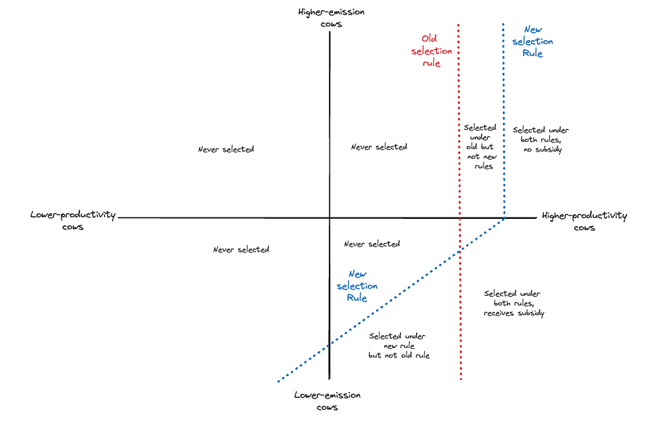
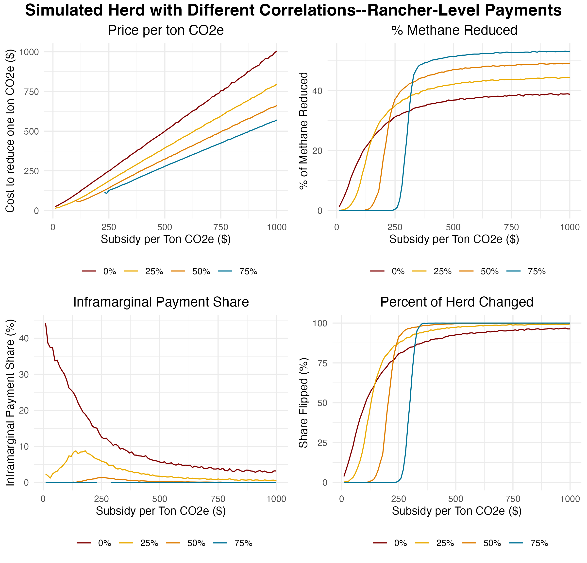

Cattle are emissions-intensive: Roughly 5% of global emissions "Global emissions", as measured by the ability to warm the climate over a 100-year period. Using this metric, one ton of methane is equivalent to about 28 tons of carbon dioxide. come from ruminant animals, especially cattle. Each head of cattle emits around 150-250 pounds of methane per year which, using the Biden EPA's social cost of methane, is worth around $120-200 in social damage annually.
Selective breeding represents one potential tool to reduce this social cost: Cattle have two sources of natural heterogeneity in their natural production of methane, caused by both productivity differences Larger cows consume more feed and produce more methane, but are also more productive and idiosyncratic factors. We call this component of methane production "residual methane" To date, selective breeding for productivity has dramatically cut the emissions-intensivity of the cattle industry. By improving herd health Sick cows produce methane without corresponding economic benefits, so a healthier cow is more methane-efficient per unit of milk/beef and shortening the period from birth to economic production, emissions per kilogram of milk declined 55% Broderick 2018 between 1924 and 2014. Ranchers will continue to selectively breed for productivity, but accelerating the pace of methane reduction might require reducing methane even if doing so trades off with productivity.
Some formal details. Assume we have a herd of $n$ bulls. Each bull possesses two traits: $merit$ and $methane$. Currently, the rancher will select the top $k\%$ by merit, where $k$ is some low value such as 1%. In other words, the selection index $I$ is equal to
$$\text{Index}_{\text{old}} = \text{merit}$$
$$ \mathbb{P} (\text{Index}_{\text{old}} > \text{threshold}_{\text{old}}) = k $$
Now we add a subsidy per unit of methane so that
$$\text{Index}_{\text{new}} = \text{merit} + \text{subsidy} $$
\[ \text{subsidy} = \begin{cases} -\lambda \cdot \text{methane}, & \text{if } \text{methane} < \text{threshold}_{\text{methane}}, \\ 0, & \text{otherwise.} \end{cases} \]
where $\lambda$ is some weight that the planner sets, $\text{threshold}_{\text{methane}}$ is the maximum methane production eligible for subsidy (set by the planner), $\text{threshold}_{\text{new}}$ is the index threshold for selection, and $ \mathbb{P} (\text{Index}_{\text{new}} > \text{threshold}_{\text{new}}) = k $
Visually, we can represent the two selection rules below. All bulls to the right of the respective dashed lines would be selected. The larger the weight on methane ($\lambda$), the more horizontal the dashed blue line becomes. The blue line eventually becomes vertical because high-emitting bulls receive no payment, not negative payments. 
Trade-off with productivity: Even if one chooses to select on the basis of residual methane The component of methane variation uncorrelated with productivity , the new herd will still be lower-merit than a herd that does not care at all about methane. By analogy, a basketball GM who cares only about height will select a taller team than a basketball GM who cares about both height and shooting ability, even if height and shooting are uncorrelated. Less colloquially, every additional factor one adds to the "breeding objective" reduces the extent to which one can optimize for other traits. Moreover, the variation in residual methane is so small compared to the variation in meritA.k.a. economic productivity that only a heavy weighting on methane can induce a major change in rancher behavior. Meanwhile, If one instead selects on the basis of total methane production, one needs to compensate ranchers even further, as lower-methane cattle become, on average, lower in merit as well.
Payments cannot become negative: Unlike a carbon tax, this subsidy scheme would entirely be voluntary. The scheme organizers cannot collect payments from ranchers using particularly high-methane cattle, and can only offer subsidies to ranchers using low-methane cattle. This restriction both limits the effectiveness of the program (since average cattle and high-methane cattle are treated identically), but also explodes the total cost (since receipts cannot offset any of the net payments).
Large problems with additionality: Additionality"Additionality" is often called "infra-marginality" in other contexts refers to the problem in environmental economics of assessing which changes are directly caused by a program. Payments for low-methane activities that would have occurred in the absence of any subsidy program are "non-additional", and thus wasted. This non-additionality problem is highly acute. By random chance, a rancher with 1000 cows will have around 500 cows with above-average methane production and around 500 cows with below-average methane production. Under the scheme described above, this rancher--who has made no effort to reduce their emissions--could receive payments for those 500 low-methane cows. The program would still have some effect--the rancher has an incentive to marginally reduce their emissions--but the payments would become wildly disproportionate to the actual benefits offered. This problem is severe: in my analysis of Holstein bulls, a hypothetical weight of $160/ton of methane (10% of the social cost) would result in 90% of subsidy dollars going to bulls that would have been selected regardless of the incentive program. Even that number understates the harm, as it does not count extra dollars given to bulls who would have been selected even with a smaller subsidy.
Surprisingly, the second effect (improved targeting) always dominates the first effect (greater trade-off with merit). As a result, increasing the level of antagonistic correlation alwaysSome trivial exceptions exist: one could imagine an entirely bimodal distribution where the effects would be identical, as both schemes result in no effect improves the benefit-cost ratio of the intervention. This finding holds even with radically different distributions: normal or non-normal, different variations, etc. Why this effect always holds true remains uncertain. The upshot is that, ironically, more costly interventions can be more cost-effective if they result in superior targeting.
Instead of paying on a per-cow basis, a planner could instead pay on a per-rancher basis. In this case, the planner requests the data from the entire herd used and compares the predicted emissions of the entire herd to a baseline. Suppose a rancher had 520 low-methane cows and 480 (symmetrically) high-methane cows, so that their emissions were truly exactly average. Under the old scheme, they could receive subsidy payments for each of those 520 low-methane cows. Under the new regime, they would only get paid on the difference from the baseline, equivalent to about 40 cows. In such a scenario, a rancher with a random distribution of cows would receive no payments.
 Two logistical challenges would need to be worked out for this solution to work: